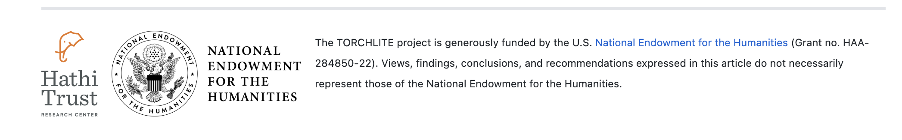

3 Featured Worksets
3.1 Ready-Made Featured Worksets
| Name | Workset ID | # of Volumes | Description |
| Toni Morrison 10 | 66477bae2600005807132b25 | 10 | 10 novels written by Toni Morrison |
| Dune by Herbert | 66477e0b2600006a07132b28 | 6 | Dune and its 5 sequels written by original author Frank Herbert |
| Native-authored Workset Sample | 640e74be300000d90b5ce31b | 10 | 10 volume sample from the list of works authored by Native Americans in HathiTrust |
| The Black Fantastic Workset | 642720e53300008d02a5dc9c | 90 | 90 volumes, including duplicates, of Black Fantastic fiction, identified by Drs.Seretha Williams and Clarissa West- White |
| USA Presidential Papers | 66477ada2600004a07132b23 | 779 | Collections of the Papers of the US Presidents over time, Hoover to Obama |
| History of Black Writers Workset Sample | 640ba4bf300000440a5ce31a | 25 | Subset of 25 volumes from the HBW workset, works by African-American authors, as identified by the Dr. Maryemma Graham and colleagues in the University of Kansas’ Project on the History of Black Writing |
3.2 Individual Volumes to Explore
uva.x001016358, The children of Sisyphus by Orlando Patterson
mdp.39015016452230, Trumbull park, a novel by Frank London Brown
hvd.32044126865930, Norton Anthology of Poetry, 5th Edition Edited by Margaret Ferguson, Mary Jo Salter, Jon Stallworthy
mdp.39015066068183, Relativity: the special and general theory Albert Einstein (translated by Robert W Lawson)
